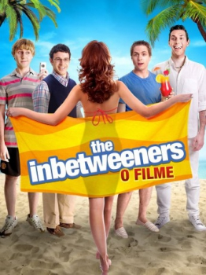

The Inbetweeners: O Filme (2011)


Out of School, Out of the Country, Out of their League

Avaliação (TMDb):


6.1/10 (745 votos)
Avaliação (Usuário):
Outro Título:The Inbetweeners Movie
País:United States, 97 minutos
Idiomas falados:Inglês, Português
Gênero(s):Comédia
Diretor(s):Ben Palmer
Codec:MPEG-2 (DVD)
Número: 5189
Sinopse:
Esses quatro amigos desajustados vão sair do sul da Inglaterra para fazer uma viagem alucinante à Malia, uma cidade festeira na ilha grega de Creta. Lá, onde as festas são regadas a bebida e muita diversão, tudo pode acontecer.
Elenco:
Simon Bird, James Buckley, Blake Harrison, Joe Thomas, Emily Head, Lydia Rose Bewley, Laura Haddock, Tamla Kari, Jessica Knappett, Theo Barklem-Biggs
Tipo de mídia: DVD R/RW,
Legendas: Inglês, Português, Sem Legendas
Alugado: Não
Tela: Anamorphic Widescreen